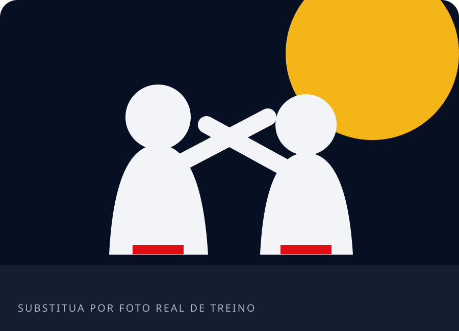
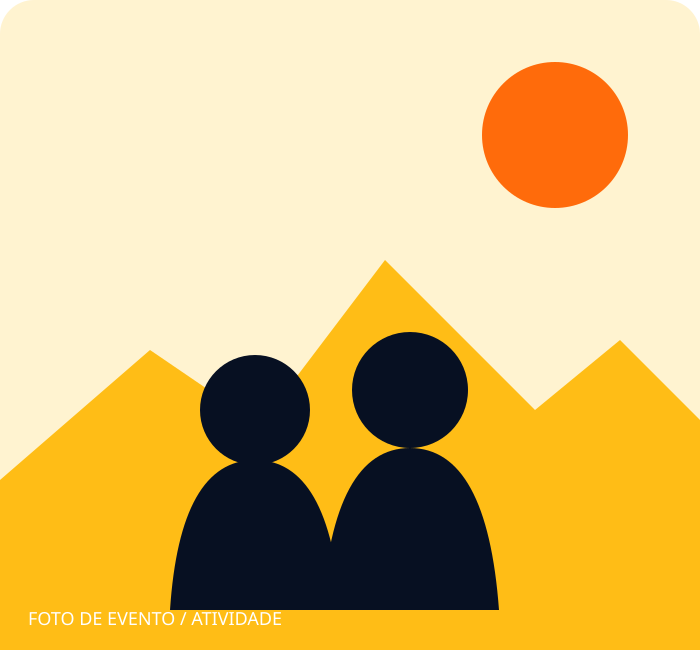

Disciplina
Constância e responsabilidade em cada novo aprendizado.
Disciplina • União • Comunidade
Um projeto social para crianças e adultos, onde o karatê abre espaço para convivência, respeito, desenvolvimento pessoal e construção de comunidade.
Acompanhe @karatesocial11 ↗Um espaço para aprender
Um grupo para pertencer
Valores para levar pela vida
Sobre o projeto
O Karatê Social é um grupo social aberto para crianças e adultos. Sua proposta aproxima pessoas por meio da prática esportiva e de valores importantes para a convivência, como respeito, disciplina e união.
Mais do que movimentos e técnicas, cada encontro pode ser uma oportunidade de aprender, compartilhar e fortalecer os vínculos com a comunidade.
Criador do projetoMárcio Lima Oliveira@1marcio.lima.oliveira ↗
Mais que karatê
Princípios que orientam uma experiência esportiva humana, acolhedora e conectada à comunidade.
Constância e responsabilidade em cada novo aprendizado.
Reconhecer o outro e cuidar das relações dentro e fora do treino.
Crescer ao lado de pessoas que compartilham o mesmo caminho.
Avançar passo a passo, respeitando o processo de cada pessoa.
Fortalecer vínculos e criar um ambiente de pertencimento.
Movimento, aprendizado e convivência em uma prática compartilhada.
Para diferentes gerações
A prática pode contribuir para convivência, coordenação, confiança e aprendizado de disciplina e respeito, sempre respeitando cada fase.
Um caminho para praticar esporte, desenvolver disciplina, buscar bem-estar e fazer parte de uma comunidade.
O projeto em ação
Galeria preparada para receber registros reais e autorizados de treinos, aulas, eventos e atividades comunitárias.


As imagens acima são espaços demonstrativos e devem ser substituídas por fotos autorizadas do projeto.
Faça parte
Converse com o projeto para conhecer possibilidades para crianças e adultos.
Entrar em contato →Apresente sua disponibilidade e saiba se existem formas de colaborar.
Conversar sobre voluntariado →Conheça possíveis necessidades e formas responsáveis de contribuir.
Como apoiar →Empresas e instituições podem iniciar uma conversa sobre parceria.
Propor uma conversa →Apoie este projeto
Pessoas, empresas e instituições podem entrar em contato para conhecer formas possíveis de apoiar a iniciativa — como materiais, estrutura, divulgação ou parceria institucional.
O projeto não informou PIX, dados bancários ou campanha de arrecadação nesta página.
Quero saber como apoiarPerguntas frequentes
Quando uma informação não está disponível, fale diretamente com o projeto pelo WhatsApp.
O projeto é voltado a crianças e adultos. Entre em contato para saber como participar.
Horários e organização das atividades não foram informados nesta página. Consulte pelo WhatsApp.
Entre em contato para conhecer necessidades e possibilidades atuais, sem presumir uma modalidade de contribuição.
Empresas e instituições podem iniciar uma conversa diretamente com o projeto.
Acompanhe o perfil oficial @karatesocial11 no Instagram.
Vamos conversar?
Fale diretamente com o projeto ou acompanhe as atividades nas redes.